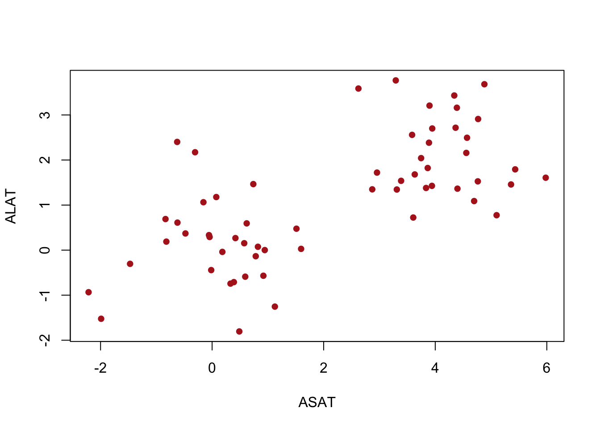
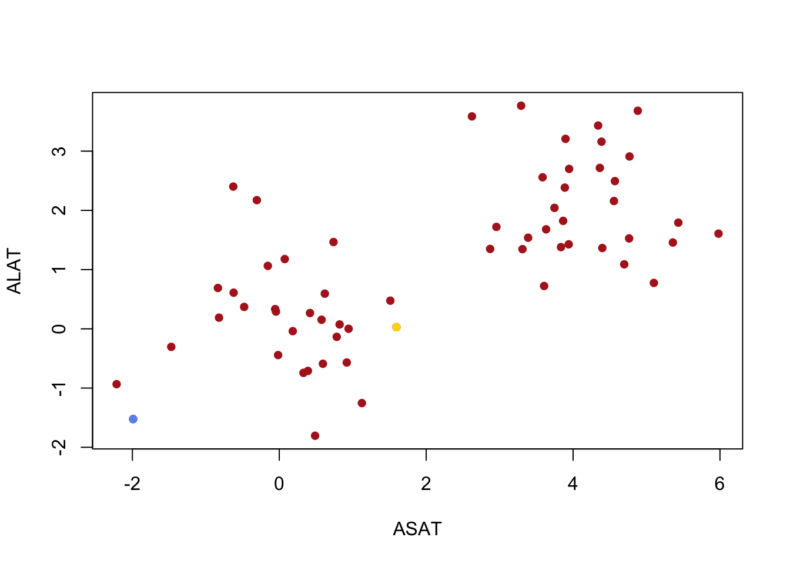
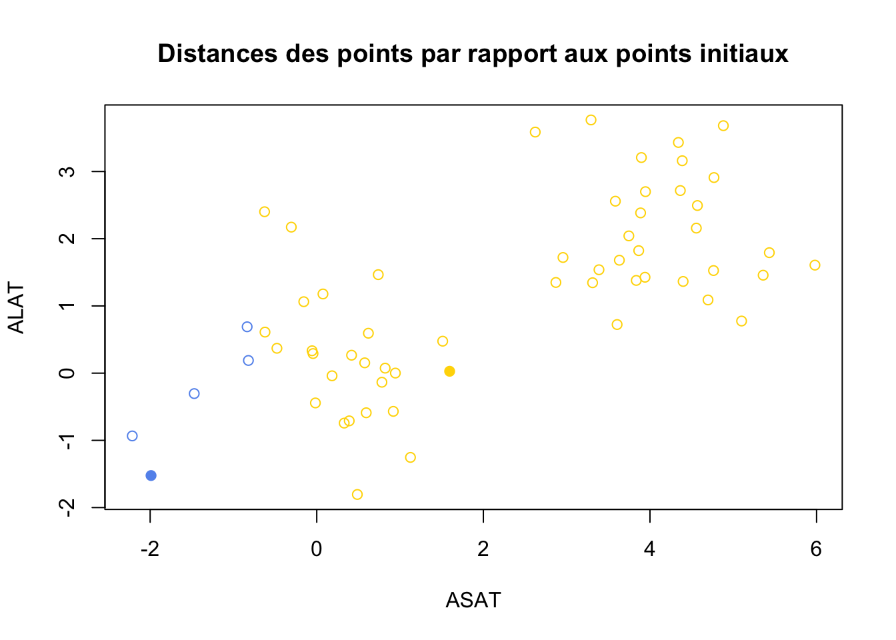
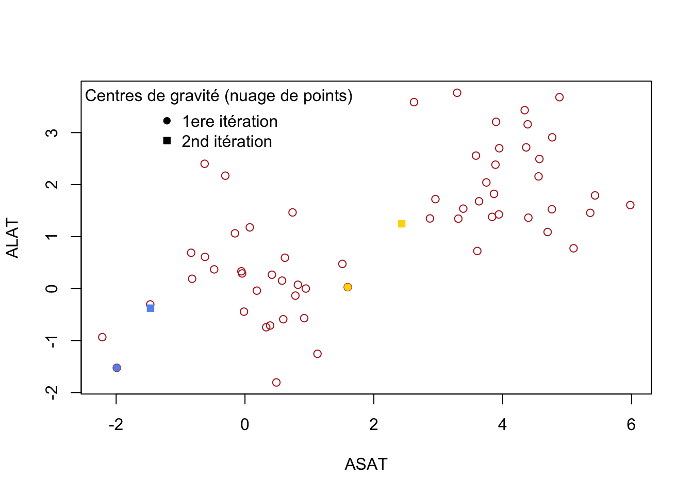
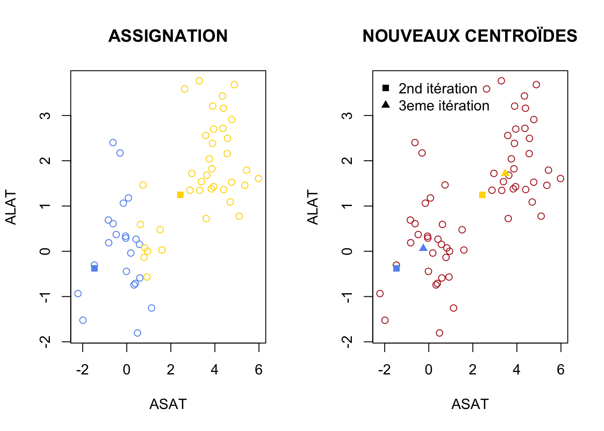
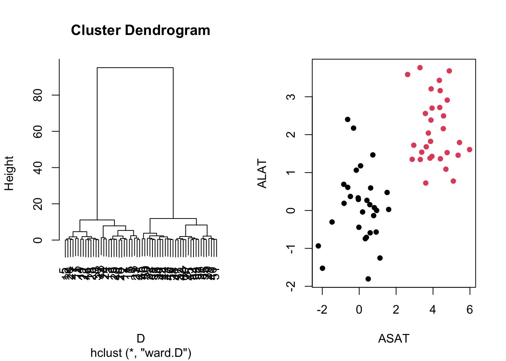
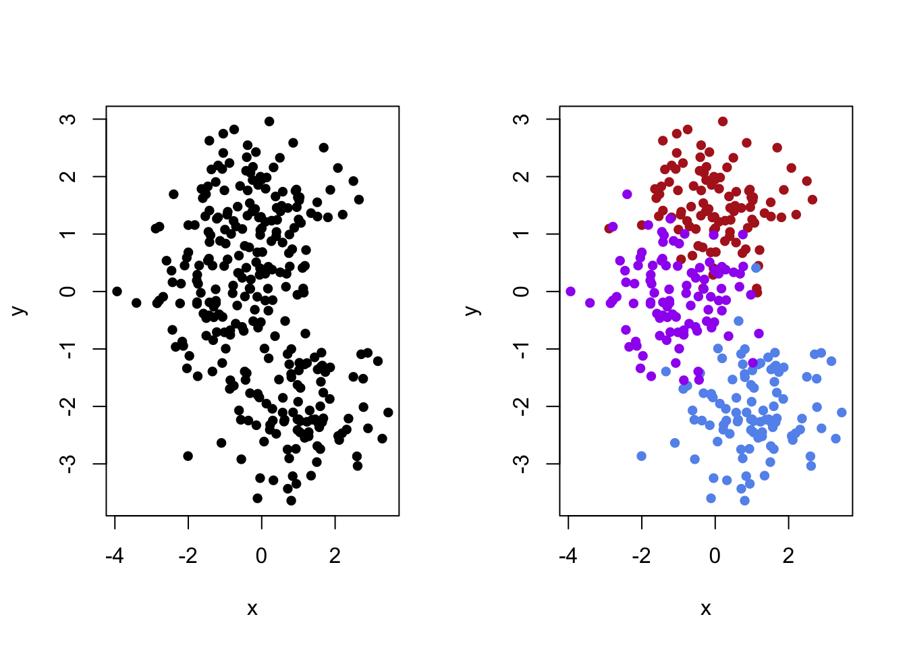
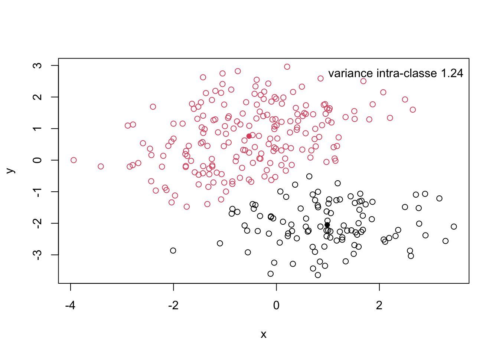

Chapter 6 Clustering
Les objectifs de ce chapitre sont de comprendre les outils qui permettent de trouver des patterns d’individus via l’expression de leurs variables.
- Que peut-on dire du graphique ci dessous ?
set.seed(1)
X <- data.frame(ASAT = c(rnorm(30, mean=0, sd=1), rnorm(30, 4, 1)),
ALAT = c(rnorm(30, mean=0, sd=1), rnorm(30, 2, 1)))
plot(X, xlab="ASAT", ylab="ALAT", pch=16, col="firebrick")
- Que pouvons nous remarquer ? Comment synthétiser l’information ?
Ici, nous avons simulé 30 individus avec une moyenne de 0 pour la variable ASAT et la variable ALAT, alors qu’un autre groupe de 30 individus possède une moyenne de 4 au ASAT et de 2 au ALAT. Pour rappel ces deux transaminases reflètent des lésions hépatiques.
6.1 Généralités
Définition des termes :
Classification : Regrouper des individus en groupes ou classes d’individus proches.
Non supervisée : dont on ne connait pas la réalité, on n’a pas d’information a priori.
Autrement dit, la classification non supervisée (ou clustering) est la recherche d’une partition ou d’une répartition des individus en classes homogènes, de sorte à ce que celles-ci soient les plus distinctes possibles.
Que souhaitons nous estimer ?
L’appartenance à une classe pour chaque individu.
Le nombre de classes optimal.
Dans ce chapitre, nous verrons 2 algorithmes qui permettent de définir la classe des individus : la classification k-means et la Classification Hiérarchique Ascendante (HAC en anglais).
6.2 K-means (ou algorithme des centres mobiles en français)
6.2.1 Principe
On demande à l’algorithme de nous donner un nombre \(n_c\) de groupes. C’est le nombre de groupe que l’on pourrait attendre. Dans un cas, nous pouvons faire l’hypothèse que la population peut se classer selon \(n_c\) patterns mais dans d’autres cas, nous ne savons quelle nombre de groupes choisir.
L’algorithme doit rendre : \(n_c\) centres. A chaque point on associe le centre le plus proche, ce qui détermine les groupes, et des régions.
Si on reprend le graphique de départ et que l’on donne deux groupes, on peut les placer de manière intuitif sur le graph. Chaque point sera associé à un groupe en fonction de sa distance aux centroïdes des groupes.
6.2.2 Algorithme du k-means (appartenance à une classe pour chaque individu)
L’algorithme du k-means se base sur plusieurs étapes : Vous pouvez retrouver un exemple sur le lien suivant.
- Première étape (INITIALISATION): on prend au hazard un nombre de points égal au nombre de groupes que nous cherchons (ici \(n_c = 2\)). Nous allons prendre les points 24 et 4 (représenté en blue et jaune sur le graphique).
plot(X, xlab="ASAT", ylab="ALAT", pch=16, col="firebrick")
points(x=X[24,1], y=X[24,2], xlab="ASAT", ylab="ALAT", pch=16, col="cornflowerblue")
points(x=X[4,1], y=X[4,2], xlab="ASAT", ylab="ALAT", pch=16, col="gold")
- Seconde étape (ASSIGNATION) : chaque point sera associé à l’un des points initialisés (bleus ou jaune) en fonction de leur distance par rapport à ce dernier.
Pour rappel, ici nous utiliserons la distance euclidienne dont la formule pour deux variable x et y est \(d(M_1, M_2) = \sum{\sqrt{(x_1-x_2)^2+(y_1-y_2)^2}}\) où \(M_i\) correspond aux individus.
## ASSIGNATION
d_n_blue <- as.matrix(dist(rbind(X[24,],X)))[-1,1] # Distance de l'ensemble des points au point bleu.
d_n_gold <- as.matrix(dist(rbind(X[4,],X)))[-1,1] # Distance de l'ensemble des points au point jaune.
cluster <- apply(cbind(d_n_blue, d_n_gold),1,which.min) # phase d'assignation.
cluster_col <- as.character(factor(cluster, c(1,2), c("cornflowerblue", "gold")))
plot(X, xlab = "ASAT", ylab = "ALAT", pch = 1, col = cluster_col, main = "Distances des points par rapport aux points initiaux")
points(x=X[24,1], y=X[24,2], xlab="ASAT", ylab="ALAT", pch=16, col="cornflowerblue")
points(x=X[4,1], y=X[4,2], xlab="ASAT", ylab="ALAT", pch=16, col="gold")
Dans ce graphique, les points pleins sont les individus sélectionnés lors de l’étape d’INITIALISATION, alors que les points vides sont les autres individus du jeu de données. La couleur de leur points sera en fonction de leur distance aux points pleins. Si l’individu se retrouve plus proche du points bleue alors il sera assigné à son groupe, et inversement pour les points du groupe jaune.
- Troisième étape (NOUVEAUX CENTROÏDES) : Dans cette troisième étape il faut recalculer le centroïde de chaque cluster (bleu et jaune), c’est-à-dire les centres de gravité du nuage de points bleue et du nuage de points jaunes. Ce seront nos nouveaux points de départ pour recommencer la phase d’ASSIGNATION.
## NOUVEAUX CENTROÏDES
centroide_blue <- colMeans(X[which(cluster==1),])
centroide_jaune <- colMeans(X[which(cluster==2),])
plot(X, xlab="ASAT", ylab="ALAT", pch=1, col="firebrick")
points(x=X[24,1], y=X[24,2], xlab="ASAT", ylab="ALAT", pch=16, col="cornflowerblue")
points(x=X[4,1], y=X[4,2], xlab="ASAT", ylab="ALAT", pch=16, col="gold")
points(centroide_blue[1], centroide_blue[2], xlab="ASAT", ylab="ALAT", pch=15, col="cornflowerblue")
points(centroide_jaune[1], centroide_jaune[2], xlab="ASAT", ylab="ALAT", pch=15, col="gold")
legend("topleft", c("1ere itération", "2nd itération"), bty="n", pch= c(16, 15), title = "Centres de gravité (nuage de points)")
Noter que les nouveaux centres de gravité ne sont plus associées à des individus en particulier.
- Boucler ces deux dernières étapes (ASSIGNATION + NOUVEAUX CENTROÏDES) pour converger vers des clusters homogènes.
d_n_blue <- as.matrix(dist(rbind(centroide_blue,X)))[-1,1] # Distance de l'ensemble des points au carré bleu.
d_n_gold <- as.matrix(dist(rbind(centroide_jaune,X)))[-1,1] # Distance de l'ensemble des points au carré jaune.
cluster <- apply(cbind(d_n_blue, d_n_gold),1,which.min) # phase d'assignation.
cluster_col <- as.character(factor(cluster, c(1,2), c("cornflowerblue", "gold")))
layout(matrix(c(1,2), nrow=1))
plot(X, xlab="ASAT", ylab="ALAT", pch=1, col=cluster_col, main = "ASSIGNATION")
points(centroide_blue[1], centroide_blue[2], xlab="ASAT", ylab="ALAT", pch=15, col="cornflowerblue")
points(centroide_jaune[1], centroide_jaune[2], xlab="ASAT", ylab="ALAT", pch=15, col="gold")
## NOUVEAUX CENTROÏDES
centroide_blue_2 <- colMeans(X[which(cluster==1),])
centroide_jaune_2 <- colMeans(X[which(cluster==2),])
plot(X, xlab="ASAT", ylab="ALAT", pch=1, col="firebrick", main = "NOUVEAUX CENTROÏDES")
points(centroide_blue[1], centroide_blue[2],pch=15, col="cornflowerblue")
points(centroide_jaune[1], centroide_jaune[2], pch=15, col="gold")
points(centroide_blue_2[1], centroide_blue_2[2],pch=17, col="cornflowerblue")
points(centroide_jaune_2[1], centroide_jaune_2[2], pch=17, col="gold")
legend("topleft", c("2nd itération", "3eme itération"), bty="n", pch= c(15,17))
À la fin, il faut faire une dernière étape d’ASSIGNATION pour définir la classe des individus où les triangles sont les centroïdes respectives des deux groupes.
## ASSIGNATION FINALE
d_n_blue <- as.matrix(dist(rbind(centroide_blue_2,X)))[-1,1] # Distance de l'ensemble des points au point bleu.
d_n_gold <- as.matrix(dist(rbind(centroide_jaune_2,X)))[-1,1] # Distance de l'ensemble des points au point jaune.
cluster <- apply(cbind(d_n_blue, d_n_gold),1,which.min) # phase d'assignation.
cluster_col <- as.character(factor(cluster, c(1,2), c("cornflowerblue", "gold")))
plot(X, xlab="ASAT", ylab="ALAT", pch=1, col=cluster_col)
points(centroide_blue_2[1], centroide_blue_2[2],pch=17, col="cornflowerblue")
points(centroide_jaune_2[1], centroide_jaune_2[2], pch=17, col="gold")
On peut remarquer que l’algorithme converge bien vers les 2 groupes que l’on aurait pu imaginer en regardant le graphique au départ.
On peut aussi utiliser l’algorithme k-means directement sur R, en appelant la function kmeans de la librairie stats.
res.kmeans <- kmeans(X, centers = 2, iter.max = 1, nstart = 1)
# Utiliser le fonction help pour savoir à quoi corresponde les arguments de la fonction.
res.kmeans## K-means clustering with 2 clusters of sizes 30, 30
##
## Cluster means:
## ASAT ALAT
## 1 4.13277458 2.113333
## 2 0.08245817 0.110278
##
## Clustering vector:
## [1] 2 2 2 2 2 2 2 2 2 2 2 2 2 2 2 2 2 2 2 2 2 2 2 2 2 2 2 2 2 2 1 1 1 1 1 1 1 1
## [39] 1 1 1 1 1 1 1 1 1 1 1 1 1 1 1 1 1 1 1 1 1 1
##
## Within cluster sum of squares by cluster:
## [1] 40.91834 51.51169
## (between_SS / total_SS = 76.8 %)
##
## Available components:
##
## [1] "cluster" "centers" "totss" "withinss" "tot.withinss"
## [6] "betweenss" "size" "iter" "ifault"Dans l’objet res.kmeans, on retrouve :
- les coordonnées des centroïdes en fonction des variables.
## ASAT ALAT
## 1 4.13277458 2.113333
## 2 0.08245817 0.110278- la classe des individus.
## [1] 2 2 2 2 2 2 2 2 2 2 2 2 2 2 2 2 2 2 2 2 2 2 2 2 2 2 2 2 2 2 1 1 1 1 1 1 1 1
## [39] 1 1 1 1 1 1 1 1 1 1 1 1 1 1 1 1 1 1 1 1 1 1On retrouve bien les 30 premiers individus dans un groupe et les 30 derniers dans un autre groupe. C’est exactement de cette manière que nous avons simulé nos données. L’algorithme est donc performant pour retrouver les patterns des individus.
6.3 Classification Hiérarchique Ascendante
La classification hiérarchique ascendante est basée sur un algorithme glouton. Au départ chaque individu forme une classe à lui seul. A chaque étape, les deux classes les plus proches sont agglomérées (critère local), pour finir avec une classe unique qui regroupe tous les individus.
L’arbre obtenu est coupé a posteriori de façon à obtenir un bon compromis entre le nombre de classes et la variance intra-classe (critère global).
Cet algorithme se base sur une distance entre les individus et sur une méthode d’agglomération.
6.3.1 Mesure d’éloignement entre les individus
On parle de mesure de dissimilarités, c’est à dire à quel point les individus se ressemble ou bien s’éloigne en fonction du nombre de caractéristiques qu’ils ont en commun.
Il existe plusieurs mesures de dissimilarités : Grover, Bray-Curtis, Jaccard, etc. A noter que la distance euclidienne peut aussi être utilisée.
6.3.2 Mesure d’agrégation
Il en existe plusieurs, comme le saut minimum, la distance maximum, la moyenne ou encore la méthode de Ward.
Chaque méthode génère un résultat différent. Nous n’aborderons pas ici les détails de ces techniques, mais la méthode de Ward est souvent privilégiée. Cette méthode vise à minimiser l’inertie à l’intérieur des classes et à maximiser celle entre les classes pour obtenir des groupes aussi homogènes que possible.
La fonction principale pour calculer un dendrogramme est hclust, où l’on spécifie le critère d’agrégation avec l’option method. Dans notre cas, nous choisirons la méthode de Ward appliquée au carré des distances, en spécifiant method = "ward.D2".
D <- dist(X) # Distance entre les individus.
HAC <- hclust(D, method = "ward.D") # Méthode d'agglomération.
layout(matrix(c(1,2), nrow=1))
plot(HAC)
groupe <- cutree(HAC, 2) # Assigner les groupes
plot(X, xlab="ASAT", ylab="ALAT", pch=16, col=groupe)
L’arbre est construit du bas vers le haut. On remarque bien que 2 groupes se distinguent.
6.4 Définir le nombre de classes optimales ?
Dans certains cas, vous ne serez pas quel nombre de classes choisir. Nous allons définir deux approches possible vous permettant de prendre une décision et définir \(n_c\) (nombre de classes). Dans cet exemple, j’ai simulé 300 individus en prenant le soin de simuler un jeu de données où les variables permettent de définir un nombre de trois groupes. L’objectif de cette partie de vérifier quel algorithme est le plus performant pour retrouver le nombre de groupe réel.
Je coloris les groupes que nous devons normalement retrouver.
layout(matrix(c(1,2), nrow=1))
plot(X[,c(1,2)], xlab ="x", ylab="y", pch=16)
plot(X[,c(1,2)], xlab ="x", ylab="y", col = rep(c("firebrick", "cornflowerblue", "purple"), each=100), pch=16)
Le problème que nous présentons ici est plus complexe que ceux utilisé précédement.
6.4.1 Première approche : Variance totale et règle du coude
Cette première approche est une apporche empirique basée sur votre observation. Par exemple, on fait le kmeans pour différents nombres de classes et on choisit le meilleur compromis entre la variance intra-classe et le nombre de classes.
On appelle inertie d’un nuage de points la moyenne des carrés des distances des \(n\) points au centre de gravité, soit :
\[ I_G (N) = \frac{1}{n} \sum{d(G, x_i)^2}\] Par exemple pour 2 classes, la variance intra-classe se calcule de cette manière :
var_intra = NULL
K = 2
res.class <- kmeans(X, centers = K)
plot(X, col=res.class$cluster, xlab="x",ylab="y" )
points(res.class$centers,pch=16, col=1:10)
for(k in 1:K){
var_intra <- c(var_intra, mean(as.matrix(dist(rbind(res.class$centers[k,],
X[which(res.class$cluster==k),])))[-1,1]))
}
legend("topright",paste("variance intra-classe", round(mean(var_intra), 3)), bty="n")
On calcule ensuite la variance intra-classe pour chaque nombre de clusters estimés (sur l’axe des ordonnées sur le graphique).
K = 10
variance_nc = NULL
for(k in 1:K){
res.class <- kmeans(X, centers = k)
var_intra = NULL
for(j in 1:k){
var_intra <- c(var_intra, mean(as.matrix(dist(rbind(res.class$centers[j,],
X[which(res.class$cluster==j),])))[-1,1]))
}
variance_nc <- c(variance_nc, mean(var_intra))
}
plot(1:10, variance_nc, type='l', xlab = "nb de classes", ylab="Inertie")
- Quelle serait le nombre de classes adapté pour notre population ?
Attention, votre résultat dépend de l’initialisation des centroïdes : comme on les place aléatoirement, le résultat donné peut être différent quand on relance l’algorithme. Il est donc conseillé de relancer plusieurs fois l’algorithme pour sélectionner la partition dont l’inertie intra-classe sera la plus petite.
layout(matrix(c(1,2, 3), nrow=1))
plot(X[,c(1,2)], xlab ="x", ylab="y", pch=16, main="Population totale")
plot(X[,c(1,2)], xlab ="x", ylab="y", col = rep(c("firebrick", "cornflowerblue", "purple"), each=100), pch=16, main="Groupes reels")
plot(X[,c(1,2)], xlab ="x", ylab="y", col = kmeans(X, centers = 3)$cluster, pch=16, main="Groupes estimés par le kmeans")
- Refaire la même chose avec la seconde méthode vue dans ce chapitre ? Quelle est la meilleure méthode pour ces données simulées ?
6.4.2 Seconde approche : coefficient de Silhouette.
Coefficient de Silhouette : Évalue le degré de compacité et de séparation des grappes. En utilisant le coefficient de Silhouette, nous pouvons choisir une valeur optimale pour le nombre de groupes.
Pour chaque point, le coefficient de silhouette est calculé en soustrayant la distance moyenne avec les points de son propre groupe (cohésion) de la distance moyenne avec les points des groupes voisins (séparation). Si cette différence est négative, cela signifie que le point est plus proche des points du groupe voisin que de ceux de son propre groupe, indiquant un mauvais classement. En revanche, si la différence est positive, le point est mieux lié à son propre groupe qu’aux groupes voisins, signalant un bon classement.
Le coefficient de silhouette global est la moyenne des coefficients de silhouette de tous les points. Le coefficient de Silhouette est compris entre -1 et 1 ; plus il est grand, mieux c’est.
L’ensemble des points appartenant à un groupe \({\textstyle k}\) est alors donné par \({\textstyle I_{k}=\{i\in [\![1,N]\!]/\ C(i)=k\}}\).
Le coefficient (ou score) de silhouette se définit d’abord sur un point \({\textstyle i}\) dont le groupe est \({\textstyle k=C(i)}\). Il se base sur la distance moyenne du point à son groupe : \({\textstyle a(i)={\frac {1}{\vert I_{k}\vert -1}}\sum _{j\in I_{k},j\neq i}d(x^{i},x^{j})}\) et la distance moyenne du point à son groupe voisin \({\textstyle b(i)=\min _{k'\neq k}{\frac {1}{\vert I_{k'}\vert }}\sum _{i'\in I_{k'}}d(x^{i},x^{i'})}\).
Le coefficient de silhouette du point \({\textstyle i}\) s’écrit alors :
\[{\displaystyle s_{sil}(i)={\frac {b(i)-a(i)}{\max(a(i),b(i))}}}\]
6.5 Travaux pratiques
Durée : 1h30
Réinitialiser votre environnement.
Objectifs : Création de son propre algorithme de clustering de type kmeans.
- Simuler les données
sigma <- matrix(0, ncol=2,nrow=2)
diag(sigma) <- c(1,0.4)
X <- rbind(mvtnorm::rmvnorm(30, mean=c(0,1.5), sigma),
mvtnorm::rmvnorm(30, mean=c(1,-2), sigma),
mvtnorm::rmvnorm(30, mean=c(0,0), sigma))6.5.1 Création de votre propre algorithme
Vous devrez vous aider des lignes de codes écrites dans ce chapitre pour :
coder la phase d’INITIALISATION
coder la phase d’ASSIGNEMENT
calculer les nouveaux centres de gravités en fonction de la phase précédente.
concaténer les trois functions dans une seule et même function.
6.5.2 Efficacité et comparaison de l’algorithme
Modifier les moyennes des données simulées pour voir comment réagit votre algorithme.
Est-il tout le temps efficace ?
Ajouter des individus les données excentrées
Refaire le clustering, qu’observez-vous ?
Tester l’algorithme HAC avec différentes distances ?
6.5.3 Clustering
- Implémenter le jeu de données Morpho2.xlsx sur R que vous pouvez télécharger ICI.
Utiliser la library readxl et sa fonction read.excel().
Tester l’algorithme des kmeans sur les colonnes de 2:6.
Combien de groupes choisir ?
A quoi correspond la colonne 1 ? Manipuler l’information avec la fonction
substr()ou biengrep()pour différencier les hommes des femmes.Interpréter les groupes avec les variables sexe et IMC.
Refaire la même chose avec l’algorithme HAC.
Conclure.